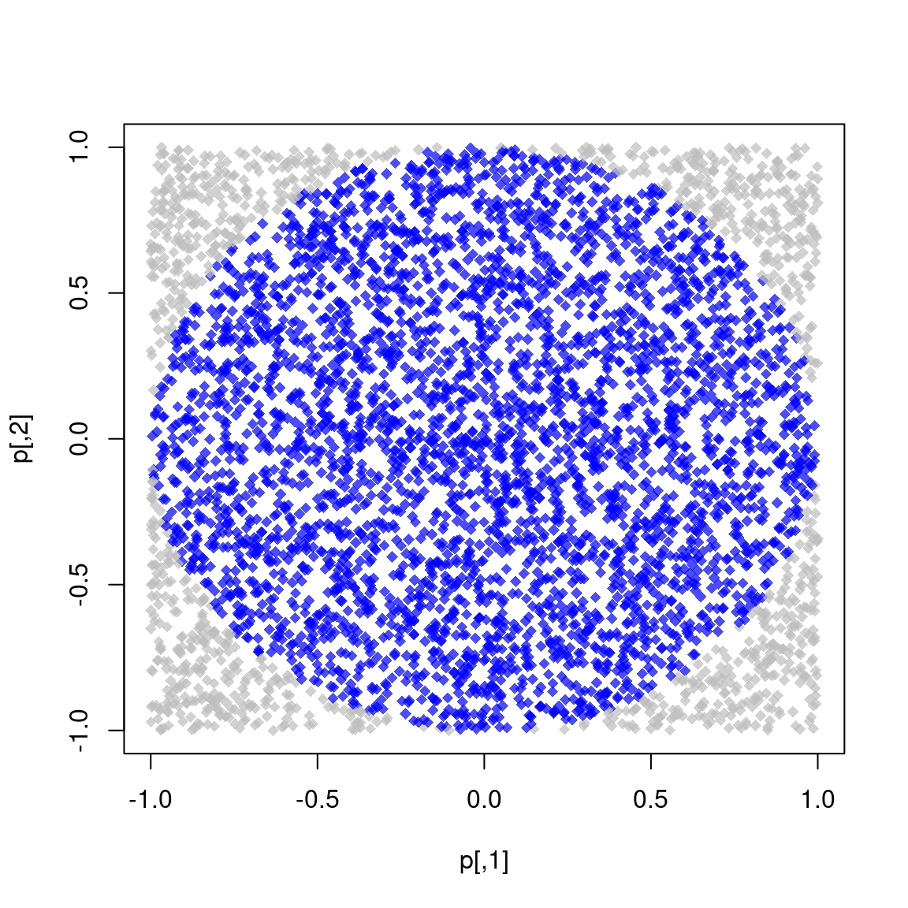

#include<Rcpp.h>
using namespace Rcpp;
// [[Rcpp::export]]
NumericVector add1(NumericVector x) {
NumericVector ans(x.size());
for (int i = 0; i < x.size(); ++i)
ans[i] = x[i] + 1;
return ans;
}5 Rcpp
What is Rcpp (Eddelbuettel and François 2011; Eddelbuettel 2013; Eddelbuettel and Balamuta 2018)?
5.1 Before we start


You need to have Rcpp installed in your system:
install.packages("Rcpp")You need to have a compiler
And that’s it!
5.2 R is great, but…
The problem:
As we saw, R is very fast… once vectorized
What to do if your model cannot be vectorized?
The solution: Use C/C++/Fotran! It works with R!
The problem to the solution: What R user knows any of those!?
R has had an API (application programming interface) for integrating C/C++ code with R for a long time.
Unfortunately, it is not very straightforward
5.3 Enter Rcpp
One of the most important R packages on CRAN.
As of January 22, 2023, about 50% of CRAN packages depend on it (directly or not).
From the package description:
The ‘Rcpp’ package provides R functions as well as C++ classes which offer a seamless integration of R and C++
5.4 Why bother?
To draw ten numbers from a normal distribution with sd = 100.0 using R C API:
SEXP stats = PROTECT(R_FindNamespace(mkString("stats"))); SEXP rnorm = PROTECT(findVarInFrame(stats, install("rnorm"))); SEXP call = PROTECT( LCONS( rnorm, CONS(ScalarInteger(10), CONS(ScalarReal(100.0), R_NilValue)))); SET_TAG(CDDR(call),install("sd")); SEXP res = PROTECT(eval(call, R_GlobalEnv)); UNPROTECT(4); return res;Using Rcpp:
Environment stats("package:stats"); Function rnorm = stats["rnorm"]; return rnorm(10, Named("sd", 100.0));
5.5 Example 1: Looping over a vector
add1(1:10) [1] 2 3 4 5 6 7 8 9 10 11Make it sweeter by adding some “sugar” (the Rcpp kind)
#include<Rcpp.h>
using namespace Rcpp;
// [[Rcpp::export]]
NumericVector add1Cpp(NumericVector x) {
return x + 1;
}add1Cpp(1:10) [1] 2 3 4 5 6 7 8 9 10 115.6 How much fast?
Compared to this:
add1R <- function(x) {
for (i in 1:length(x))
x[i] <- x[i] + 1
x
}
microbenchmark::microbenchmark(add1R(1:1000), add1Cpp(1:1000))Unit: microseconds
expr min lq mean median uq max neval cld
add1R(1:1000) 33.630 34.6720 52.35089 35.3800 36.3190 1711.512 100 a
add1Cpp(1:1000) 2.209 2.5265 8.21128 2.9595 5.2305 428.240 100 b5.7 Main differences between R and C++
One is compiled, and the other interpreted
Indexing objects: In C++ the indices range from 0 to
(n - 1), whereas in R is from 1 ton.All expressions end with a
;(optional in R).In C++ object need to be declared, in R not (dynamic).
5.8 C++/Rcpp fundamentals: Types
Besides C-like data types (double, int, char, and bool), we can use the following types of objects with Rcpp:
Matrices:
NumericMatrix,IntegerMatrix,LogicalMatrix,CharacterMatrixVectors:
NumericVector,IntegerVector,LogicalVector,CharacterVectorAnd more!:
DataFrame,List,Function,Environment
5.9 Parts of “an Rcpp program”
Line by line, we see the following:
The
#include<Rcpp.h> is similar tolibrary(...)in R, it brings in all that we need to write C++ code for Rcpp.using namespace Rcpp is somewhat similar todetach(...). This simplifies syntax. If we don’t include this, all calls to Rcpp members need to be explicit, e.g., instead of typingNumericVector, we would need to typeRcpp::NumericVectorThe
//starts a comment in C++, in this case, the// [[Rcpp::export]] comment is a flag Rcpp uses to “export” this C++ function to R.It is the first part of the function definition. We are creating a function that returns a
NumericVector , is calledadd1 , has a single input element namedx that is also aNumericVector .Here, we are declaring an object called
ans , which is aNumericVector with an initial size equal to the size ofx . Notice that.size() is called a “member function” of thexobject, which is of classNumericVector.We are declaring a for-loop (three parts):
int i = 0 We declare the variablei, an integer, and initialize it at 0.i < x.size() This loop will end wheni’s value is at or above the length ofx.++i At each iteration,iwill increment in one unit.
ans[i] = x[i] + 1 set the i-th element ofansequal to the i-th element ofxplus 1.return ans exists the function returning the vectorans.
Now, where to execute/run this?
- You can use the
sourceCppfunction from theRcpppackage to run .cpp scripts (this is what I do most of the time). - There’s also
cppFunction, which allows compiling a single function. - Write an R package that works with Rcpp.
For now, let’s use the first option.
5.10 Example running .cpp file
Imagine that we have the following file named norm.cpp
#include <Rcpp.h>
using namespace Rcpp;
// [[Rcpp::export]]
double normRcpp(NumericVector x) {
return sqrt(sum(pow(x, 2.0)));
}We can compile and obtain this function using this line Rcpp::sourceCpp("norm.cpp"). Once compiled, a function called normRcpp will be available in the current R session.
5.11 Your turn
5.11.1 Problem 1: Adding vectors
- Using what you have just learned about Rcpp, write a function to add two vectors of the same length. Use the following template
#include <Rcpp.h>
using namespace Rcpp;
// [[Rcpp::export]]
NumericVector add_vectors([declare vector 1], [declare vector 2]) {
... magick ...
return [something];
}- Now, we have to check for lengths. Use the
stopfunction to make sure lengths match. Add the following lines in your code
if ([some condition])
stop("an arbitrary error message :)");5.11.2 Problem 2: Fibonacci series

Each element of the sequence is determined by the following:
\[ F(n) = \left\{\begin{array}{ll} n, & \mbox{ if }n \leq 1\\ F(n - 1) + F(n - 2), & \mbox{otherwise} \end{array}\right. \]
Using recursions, we can implement this algorithm in R as follows:
fibR <- function(n) {
if (n <= 1)
return(n)
fibR(n - 1) + fibR(n - 2)
}
# Is it working?
c(
fibR(0), fibR(1), fibR(2),
fibR(3), fibR(4), fibR(5),
fibR(6)
)[1] 0 1 1 2 3 5 8Now, let’s translate this code into Rcpp and see how much speed boost we get!
5.11.3 Problem 2: Fibonacci series (solution)
Code
#include <Rcpp.h>
// [[Rcpp::export]]
int fibCpp(int n) {
if (n <= 1)
return n;
return fibCpp(n - 1) + fibCpp(n - 2);
}microbenchmark::microbenchmark(fibR(20), fibCpp(20))Unit: microseconds
expr min lq mean median uq max neval cld
fibR(20) 5350.894 5643.050 5982.69115 5724.878 5810.474 8855.542 100 a
fibCpp(20) 11.928 12.479 24.21755 15.318 21.728 706.360 100 b5.12 RcppArmadillo and OpenMP
Friendlier than RcppParallel… at least for ‘I-use-Rcpp-but-don’t-actually-know-much-about-C++’ users (like myself!).
Must run only ‘Thread-safe’ calls, so calling R within parallel blocks can cause problems (almost all the time).
Use
armaobjects, e.g.arma::mat,arma::vec, etc. Or, if you are used to themstd::vectorobjects as these are thread-safe.Pseudo Random Number Generation is not very straightforward… But C++11 has a nice set of functions that can be used together with OpenMP
Need to think about how processors work, cache memory, etc. Otherwise, you could get into trouble… if your code is slower when run in parallel, then you probably are facing false sharing
If R crashes… try running R with a debugger (see Section 4.3 in Writing R extensions):
~$ R --debugger=valgrind
5.12.1 RcppArmadillo and OpenMP workflow
Tell Rcpp that you need to include that in the compiler:
#include <omp.h> // [[Rcpp::plugins(openmp)]]Within your function, set the number of cores, e.g
// Setting the cores omp_set_num_threads(cores);Tell the compiler that you’ll be running a block in parallel with OpenMP
#pragma omp [directives] [options] { ...your neat parallel code... }You’ll need to specify how OMP should handle the data:
shared: Default, all threads access the same copy.private: Each thread has its own copy, uninitialized.firstprivateEach thread has its own copy, initialized.lastprivateEach thread has its own copy. The last value used is returned.
Setting
default(none)is a good practice.Compile!
5.12.2 Ex 5: RcppArmadillo + OpenMP
Our own version of the dist function… but in parallel!
#include <omp.h>
#include <RcppArmadillo.h>
// [[Rcpp::depends(RcppArmadillo)]]
// [[Rcpp::plugins(openmp)]]
using namespace Rcpp;
// [[Rcpp::export]]
arma::mat dist_par(const arma::mat & X, int cores = 1) {
// Some constants
int N = (int) X.n_rows;
int K = (int) X.n_cols;
// Output
arma::mat D(N,N);
D.zeros(); // Filling with zeros
// Setting the cores
omp_set_num_threads(cores);
#pragma omp parallel for shared(D, N, K, X) default(none)
for (int i=0; i<N; ++i)
for (int j=0; j<i; ++j) {
for (int k=0; k<K; k++)
D.at(i,j) += pow(X.at(i,k) - X.at(j,k), 2.0);
// Computing square root
D.at(i,j) = sqrt(D.at(i,j));
D.at(j,i) = D.at(i,j);
}
// My nice distance matrix
return D;
}# Simulating data
set.seed(1231)
K <- 5000
n <- 500
x <- matrix(rnorm(n*K), ncol=K)
# Are we getting the same?
table(as.matrix(dist(x)) - dist_par(x, 4)) # Only zeros
0
250000 # Benchmarking!
microbenchmark::microbenchmark(
dist(x), # stats::dist
dist_par(x, cores = 1), # 1 core
dist_par(x, cores = 2), # 2 cores
dist_par(x, cores = 4), # 4 cores
times = 1,
unit = "ms"
)Unit: milliseconds
expr min lq mean median uq max
dist(x) 2188.525 2188.525 2188.525 2188.525 2188.525 2188.525
dist_par(x, cores = 1) 2424.293 2424.293 2424.293 2424.293 2424.293 2424.293
dist_par(x, cores = 2) 1863.913 1863.913 1863.913 1863.913 1863.913 1863.913
dist_par(x, cores = 4) 1209.131 1209.131 1209.131 1209.131 1209.131 1209.131
neval
1
1
1
15.12.3 Ex 6: The future
future is an R package that was designed “to provide a very simple and uniform way of evaluating R expressions asynchronously using various resources available to the user.”
futureclass objects are either resolved or unresolved.If queried, Resolved values are return immediately, and Unresolved values will block the process (i.e. wait) until it is resolved.
Futures can be parallel/serial, in a single (local or remote) computer, or a cluster of them.
Let’s see a brief example
library(future)
plan(multicore)
# We are creating a global variable
a <- 2
# Creating the futures has only the overhead (setup) time
system.time({
x1 %<-% {Sys.sleep(3);a^2}
x2 %<-% {Sys.sleep(3);a^3}
})
## user system elapsed
## 0.018 0.012 0.030
# Let's just wait 5 seconds to make sure all the cores have returned
Sys.sleep(3)
system.time({
print(x1)
print(x2)
})
## [1] 4
## [1] 8
## user system elapsed
## 0.003 0.000 0.0035.12.4 Bonus track 1: Simulating \(\pi\)
We know that \(\pi = \frac{A}{r^2}\). We approximate it by randomly adding points \(x\) to a square of size 2 centered at the origin.
So, we approximate \(\pi\) as \(\Pr\{\|x\| \leq 1\}\times 2^2\)

The R code to do this
pisim <- function(i, nsim) { # Notice we don't use the -i-
# Random points
ans <- matrix(runif(nsim*2), ncol=2)
# Distance to the origin
ans <- sqrt(rowSums(ans^2))
# Estimated pi
(sum(ans <= 1)*4)/nsim
}library(parallel)
# Setup
cl <- makePSOCKcluster(4L)
clusterSetRNGStream(cl, 123)
# Number of simulations we want each time to run
nsim <- 1e5
# We need to make -nsim- and -pisim- available to the
# cluster
clusterExport(cl, c("nsim", "pisim"))
# Benchmarking: parSapply and sapply will run this simulation
# a hundred times each, so at the end we have 1e5*100 points
# to approximate pi
microbenchmark::microbenchmark(
parallel = parSapply(cl, 1:100, pisim, nsim=nsim),
serial = sapply(1:100, pisim, nsim=nsim),
times = 1
)Unit: milliseconds
expr min lq mean median uq max neval
parallel 295.0158 295.0158 295.0158 295.0158 295.0158 295.0158 1
serial 405.3509 405.3509 405.3509 405.3509 405.3509 405.3509 1ans_par <- parSapply(cl, 1:100, pisim, nsim=nsim)
ans_ser <- sapply(1:100, pisim, nsim=nsim)
stopCluster(cl) par ser R
3.141762 3.141266 3.141593 5.13 See also
- Package parallel
- Using the iterators package
- Using the foreach package
- 32 OpenMP traps for C++ developers
- The OpenMP API specification for parallel programming
- ‘openmp’ tag in Rcpp gallery
- OpenMP tutorials and articles
For more, check out the CRAN Task View on HPC